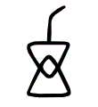

德充於內，物應【校：物應依趙諫議本改。】於外，外內玄合，信若符命而遺其形骸也。崔云：此遺形棄知，以德實之驗也。
魯有兀者王駘，姓王，名駘，魯人也。刖一足曰兀。形雖殘兀，而心實虛忘，故冠德充符而爲篇首也。兀者五忽反，又音界。李云：刖足曰兀。案篆書兀介字相似。王駘音臺，徐又音殆。人姓名也。從之遊者與仲尼相若。弟子多少敵：孔子。若，如也。陪從王駘遊行稟學，門人多少似於仲尼者也。從之如字，李才用反。下同。相若若，如也，弟子如夫子多少也。常季問於仲尼曰：「王駘，兀者也，從之遊者與夫子中分魯。姓常，名季，魯之賢人也。王駘遊行，外忘形骸，內德充實，所以從遊學者，數滿三千，與孔子之徒中分魯國。常季未達其【校：「其」，《南華真經註疏》從輯要本作「眞」。】趣，是以生疑。常季或云：孔子弟子。立不敎，坐不議，虛而往，實而歸。各自得而足也。弟子雖多，曾無講說，立不敎授，坐無議論，請益則虛心而往，得理則實腹而歸。又解：未學無德，亦爲虛往也。立不敎坐不議司馬云：立不敎授，坐不議論。固有不言之敎，无形而心成者邪？怪其殘形而心乃充足也。夫心之全也，遺身形，忘五藏，忽然獨往，而天下莫能離。敎授門人，曾不言議。殘兀如是，無復形容，而玄道至德，內心成滿。必固有此，眾乃從之也。五藏才浪反。後同。是何人也？」常季怪其殘兀而聚眾極多。欲顯德充之美，故發斯問也。
仲尼曰：「夫子，聖人也，丘也直後而未往耳。丘將以爲師，而況不若丘者乎！宣尼呼王駘爲夫子，答常季云：「王駘是體道聖人也，汝自不識人，所以致疑。丘直爲參差在後，未得往事。丘將尊爲師傅，諮詢問道，何況晚學之類，不如丘者乎！請益服膺，固其宜矣。」丘也直後而未往耳李云：自在眾人後，未得往師之耳。◎慶藩案：直之爲言特也。吕氏春秋忠廉篇特王子慶忌爲之飭而不殺耳，高注：特，猶直也。鄘風柏舟實維我特，韓詩特作直。史記叔孫通傳吾直戲耳，漢書直作特。奚假魯國！丘將引天下而與從之。」夫神全心具，則體與物冥。與物冥者，天下之所不能遠，奚但一國而已哉！奚，何也。「何但假藉魯之一邦耶！丘將誘引宇內，稟承盛德，猶恐未盡其道也。」能遠于萬反。
常季曰：「彼兀者也，而王先生，其與庸亦遠矣。王，盛也。庸，常也。先生，孔子也。彼王駘者，是殘兀之人，門徒侍從，盛於尼父。以斯疑怪，應異常流，與凡常之人固當遠矣。而王于況反。李云：勝也。崔云：君長也。其與庸亦遠矣與凡庸異也。崔云：庸，常人也。若然者，其用心也獨若之何？」然，猶如是也。王駘盛德如是，爲物所歸，未審運智用心，獨若何術？常季不達【校：「妄」，《南華真經註疏》從輯要本作「達」。據之改。】，發此疑也。
仲尼曰：「死生亦大矣，人雖日變，然死生之變，變之大者也。而不得與之變，彼與變俱，故死生不變於彼。夫山舟潛遁，薪指遷流，雖復萬境皆然，而死生最大。但王駘心冥造物，與變化而遷移，跡混人間，將死生而俱往，故變所不能變者也。雖天地覆墜，亦將不與之遺。斯順之也。遺，失也。雖復圜天顛覆，方地墜陷，既冥於安危，故未嘗喪我也。雖天地覆芳服反。墜本又作隊，直類反。李云：天地猶不能變已，況生死也！審乎无假明性命之固當。◎慶藩案：無假當是無瑕之誤，謂審乎己之無可瑕疵，斯任物自遷而無役於物也。淮南精神篇正作審乎無瑕。瑕假皆從叚聲，致易互誤。史記鄭世家使人誘劫鄭大夫甫假，左傳作傅瑕。禮檀弓肩假，漢書古今人表作公肩瑕，即其證也。而不與物遷，任物之自遷。靈心安審，妙體真元，既與道相應，故不爲物所遷變者也。命物之化以化爲命，而無乖迕。怪迕五故反。本亦作遻。下同。而守其宗【校：闕誤引江南古藏本宗下有者字。】也。」不離至當之極。達於分命，冥於外物，唯命唯物，與化俱行，動不乖寂，故恆住其宗本者也。不離力智反。
常季曰：「何謂也？」方深難悟，更請決疑。
仲尼曰：「自其異者視之，肝膽楚越也；恬苦之性殊，則美惡之情背。萬物云云，悉歸空寂。倒置之類，妄執是非，於重玄道中，横起分别。何異乎肝膽附【校：附字依劉文典補正本補。】生，本同一體也，楚越迢遞，相去數千，而於一體之中，起數千之遠，異見之徒，例皆如是也。肝膽丁覽反。美惡烏路反。下皆同。情背音佩。自其同者視之，萬物皆一也。雖所美不同，而同有所美。各美其所美，則萬物一美也；各是其所是，則天下一是也。夫因其所異而異之，則天下莫不異。而浩然大觀者，官天地，府萬物，知異之不足異，故因其所同而同之，則天下莫不皆同；又知同之不足有，故因其所無而無之，則是非美惡，莫不皆無矣。夫是我而非彼，美己而惡人，自中知以下，至於昆蟲，莫不皆然。然此明乎我而不明乎彼者爾。若夫玄通泯合之士，因天下以明天下。天下無曰我非也，即明天下之無非；無曰彼是也，即明天下之無是。無是無非，混而爲一，故能乘變任化，迕物而不慴。若夫玄通之士，浩然大觀，二儀萬物，一指一馬；故能忘懷任物，大順羣生。然同者見其同，異者見其異，至論眾妙之境，非異亦非同也。中知音智。不慴之涉反。夫若然者，且不知耳目之所宜，宜生於不宜者也。無美無惡，則無不宜。無不宜，故忘【校：世德堂本作亡。下同。】其宜也。耳目之宜，宜於聲色者也。且凡情分别，耽滯聲色，故有宜與不宜，可與不可。而王駘混同萬物，冥一死生，豈於根塵之間而懷美惡之見耶！而遊心乎德之和；都忘宜，故無不任也。都任之而不得者，未之有也；無不得而不和者，亦未聞也。故放心於道德之閒，蕩然無不當，而曠【校：世德堂本作擴。】然無不適也。既而混同萬物，不知耳目之宜，故能遊道德之鄉，放任乎至道之境者也。物視其所一而不見其所喪，視喪其足猶遺土也。」體夫極數之妙心，故能無物而不同，無物而不同，則死生變化，無往而非我矣。故生爲我時，死爲我順；時爲我聚，順爲我散。聚散雖異，而我皆我之，則生故我耳，未始有得；死亦我也，未始有喪。夫死生之變，猶以爲一，既覩其一，則蛻【校：世德堂本作說，趙諫議本作悦。】然無係，玄同彼我，以死生爲寤寐，以形骸爲逆旅，去生如脱屣，斷足如遺土，吾未見足以纓茀其心也。物視，猶視物也。王駘一於死生，均於彼我。生爲我時，不見其得；死爲我順，不見其喪；覼【校：「覼」，《南華真經註疏》道藏成疏本、輯要本作「觀」。】視萬物，混而一之。故雖兀足，視之如遺土者也。所喪息浪反。下及注同。說然始銳反，又音悦。脱屨九具反。本亦作屣，所買反。◎盧文弨曰：今本書作屣。斷足丁管反。
常季曰：「彼爲己以其知，嫌王駘未能忘知而自存。彼，王駘也。謂王駘修善修己，猶用心知。嫌其未能忘知而任獨者也。爲己於僞反。得其心以其心。嫌未能遺心而自得。嫌王駘不能忘懷任致，猶用心以得心也。夫得心者，無思無慮，忘知忘覺，死灰槁木，泊爾無情，措之於方寸之間，超【校：「起」，《南華真經註疏》從輯要本作「超」。據之改。】之於視聽之表，同二儀之覆載，順三光以照燭，混塵穢而不撓其神，履窮塞而不忤其慮，不得爲得，而得在於無得，斯得之矣。若以心知之術而得之者，非真得也。得其常心，物何爲最之哉？」夫得其常心，平往者也。嫌其不得平往而與物遇，故常使物就之。最，聚也。若能虛忘平淡，得真常之心者，固當和光匿耀，不殊於俗。豈可獨異於物，使眾歸之者也！最之徂會反，徐采會反。下注同。司馬云：聚也。◎家世父曰：知者外發，心者內存；以其知得其心，循外以葆中也。心者，不息之真機，常心者，無妄之本體；以其心得其常心，即體以證道也。說文：最，犯而取也，猶言物莫能犯之。郭象斷句誤。◎慶藩案：說文：冣，積也，從冂（莫狄切。）取，取亦聲。徐鍇曰：古以聚物之聚爲冣。世人多見最，少見冣，故書傳冣字皆作最。
仲尼曰：「人莫鑑於流水而鑑於止水，夫止水之致鑑者，非爲止以求鑑也。故王駘之聚眾，眾自歸之，豈引物使從己耶【校：世德堂本無耶字。】！鑑，照也。夫止水所以留鑑者，爲其澄清故也；王駘所以聚眾者，爲其凝寂故也。止水本無情於鑑物，物自照之；王駘豈有意於招攜，而眾自來歸湊者也。鑑古暫反。流水崔本作沬水，云：沬或作流。◎慶藩案：流水與止水相對爲文。崔本作沬，非也。隸書流或作𣴑（見魯相史晨饗孔廟後碑。）與沬形相似，故崔氏誤以爲沬。淮南說山篇人莫鑑於沬雨，高注：沬雨，或作流潦。則沬爲流字之譌益碻。唯止能止眾止。動而爲之，則不能居眾物之止。唯，獨也。唯止是水本凝湛，能止是留停鑑人，眾止是物來臨照。亦猶王駘忘【校：「忘」，《南華眞經注疏》從輯要本作「獨」。】懷虛寂，故能容止羣生，由是功能，所以爲眾歸聚也。受命於地，唯松柏獨也【校：闕誤引張君房本也下有正字。俞樾以下在字乃正之誤。】在冬夏青青；夫松柏特稟自然之鍾【校：趙諫議本鍾作種。】氣，故能爲眾木之傑耳，非能爲而得之也。凡厥草木，皆資厚地。至於稟質堅勁，隆冬不凋者，在松柏通年四序，常保青全，受氣自爾，非關指意。王駘聚眾，其義亦然也。受命於天，唯舜獨也正【校：闕誤引張君房本此句作堯舜獨也正，正下有在萬物之首五字。】，言特受自然之正氣者至希也，下首則唯有松柏，上首則唯有聖人，故凡不正者皆來求正耳。若物皆有青全，則無貴於松柏；人各自正，則無羨於大聖而趣之。人稟三才，受命蒼昊，圓首方足，其類極多。至如挺氣正真，獨有虞舜。豈由役意，直置自然。王駘合道，其義亦爾。郭注曰下首唯有松柏上首唯有聖人者，但人頭在上，去上則死，木頭在下，去下則死，是以呼人爲上首，呼木爲下首。故上首食傍首，傍首食下首。下首，草木也，傍首，蟲獸也。幸能正生，以正眾生。幸自能正耳，非爲正以正之。受氣上玄，能正生道也，非由用意，幸率【校：「幸率」，《南華真經註疏》從輯要本作「悉本」。按當從。】自然，既能正己，復能正物。正己正物，自利利他，內外行圓，名爲大聖。虞舜既爾，王駘亦然。而舜受讓人，故爲標的也。夫保始之徵，不懼之實。勇士一人，雄入於九軍。將求名而能自要者，而猶若是，非能遺名而無不任。徵，成也，信也。天子六軍，諸侯三軍，故九軍也。或有一人，稟氣勇武，保守善始之心，信成令終之節，內懷不懼之志，外顯勇猛之姿。既而直入九軍，以求名位，尚能伏心要譽，忘死忘生。何況王駘！體道之狀，列在下文也。保始之徵李云：徵，成也，終始可保成也。九軍崔李【校：李字依世德堂本改。】云：天子六軍，諸侯三軍，通爲九軍也。簡文云：兵書以攻九天，收九地，故謂之九軍。自要一遥反。而況官【校：唐寫本官作宮。】天地，府萬物，冥然無不體也。綱維二儀曰官天地，苞藏宇宙曰府萬物。夫勇士入軍，直要名位，猶能不顧身命，忘於生死。而況官府兩儀，混同萬物，視死如生，不亦宜乎！直寓六骸，所謂逆旅。寓，寄也。六骸，謂身首四肢也。王駘體一身非實，達萬有皆真，故能混塵穢於俗中，寄精神於形內，直置暫遇而已，豈係之耶！六骸崔云：手足首身也。象耳目，人用耳目，亦用耳目，非須耳目。象，似也。和光同塵，似用耳目，非須也。一知之所知，而心未嘗死者乎！知與變化俱，則無往而不冥，此知之一者也。心與死生順，則無時而非生，此心之未嘗死也。一知，智也。所知，境也。能知之智照所知之境，境智冥會，能所無差，故知與不知，通而爲一。雖復跡理物化，而心未嘗見死者也，豈容有全兀於其間哉！彼且擇日而登假，人則從是也。以不失會爲擇耳，斯人無擇也，任其天行而時動者也。故假借之人，由此而最之耳。彼王駘者，豈復簡擇良日而登昇玄道？葢不然乎，直置虛淡忘懷而會之也。至人無心，止水留鑑，而世閒虛假之人，由是而從之也。彼且如字。徐子余反。下同。假人古雅反，借也。徐音遐，讀連上句，人字向下。◎慶藩案：登假即登格也。假格古通用。詩奏格或作奏假，是其證。爾雅：格，陟，登，升也。既言登又曰格者，古人自有複語耳。楚辭離騷陟陞皇之赫戲兮，陟亦陞也。彼且何肯以物爲事乎！」其恬漠故全也。唯彼王駘，冥真合道，虛假之物自來歸之，彼且何曾以爲己務！
申徒嘉，兀者也，而與鄭子産同師於伯昏无人。姓申徒，名嘉，鄭之賢人，兀者也。姓公孫，名僑，字子産，鄭之賢大夫也。伯昏無人，師者之嘉號也。伯，長也。昏，闇也。德居物長，韜光若闇，洞忘物我，故曰伯昏無人。子産申徒，俱學玄道，雖復出處殊隔，而同師伯昏，故寄此三人以彰德充之義也。申徒嘉李云：申徒，氏；嘉，名。無人雜篇作瞀人。子産謂申徒嘉曰：「我先出則子止，子先出則我止。羞與刖者並行。子産執政當塗，榮華富貴；申徒稟形殘兀，無復容儀。子産雖學伯昏，未能忘遣，猶存寵辱，恥見形殘，故預相檢約，令其必不並己也。刖者音月，又五刮反。」其明日，又與合堂同席而坐。子産謂申徒嘉曰：「我先出則子止，子先出則我止。今我將出，子可以止乎，其未邪？質而問之，欲使必不並己。子産存榮辱之意，申徒忘貴賤之心，前雖有言，都不采領，所以居則共堂，坐還同席。公孫見其如此，故質而問之。且子見執政而不違，子齊執政乎？」常以執政自多，故直云子齊執政，便謂足以明其不遜【校：趙諫議本遜下有也字。】。違，避也。夫出處異塗，貴賤殊致。我秉執朝政，便爲貴大；汝乃卑賤形殘，應殊敬我。不能遜讓，翻欲齊己也。
申徒嘉曰：「先生之門，固有執政焉如此哉？此論德之處，非計位也。先生，伯昏也，先生道門，深明眾妙，混同榮辱，齊一死生。定以執政自多，必如此耶？之處昌慮反。子而說子之執政而後人者也？笑其矜說在位，欲處物先。汝猶悦愛榮華，矜誇政事，推人於後，欲處物先。意見如斯，何名學道？而說音悦。注同。聞之曰：『鑑明則塵垢不止，止則不明也。久與賢人處則无過。』今子之所取大者，先生也，而猶出言若是，不亦過乎！」事明師而鄙吝之心猶未去，乃真過也。鑑，鏡也。夫鏡明則塵垢不止，止則非明照也，亦猶久與賢人居則無過，若有過則非賢哲。今子之所取，可重可大者，先生之道也。而先生之道，退己虛忘，子乃自矜，深乖妙旨，而出言如是，豈非過乎！
子産曰：「子既若是矣，若是形殘。猶與堯爭善，計子之德不【校：闕誤引文成李張諸本不作□。】足以自反邪？」言不自顧省，而欲輕蔑在位，與有德者並。計子之德，固【校：「故」，《南華真經註疏》從道藏成疏本作「固」。據之改。】不足以補形殘之過。反，猶復也。言申徒形殘如是而不自知，乃欲將我並驅，可謂與堯爭善。子雖有德，何足【陳林羣校：依《南華眞經注疏》刪「在」字。】言以德補殘？猶未平復也。爭善如字。
申徒嘉曰：「自狀其過以不當亡者眾，多自陳其過狀，以己爲不當亡者眾也。不狀其過以不當存者寡。默然知過，自以爲應死者少也。夫自顯其狀，推罪於他，謂己無愆，不合當亡，如此之人，世間甚多。不顯過狀，將罪歸己，謂己之過，不合存生，如此之人，世間寡少。鄭子産奢侈矜伐，於義亦然者也。知不可柰何而安之若命，唯有德者能之。若，順也。夫素質形殘，稟之天命，雖有知計，無如之何，唯當安而順之，則所造皆適。自非盛德，其孰能然！知不可如字，又音智。遊於羿之彀中。中央者，中地也；然而不中者，命也。羿，古之善射者。弓矢所及爲彀中。夫利害相攻，則天下皆羿也。自不遺身忘知與物同波者，皆遊於羿之彀中耳。雖張毅之出，單豹之處，猶未免於中地，則中與不中，唯在命耳。而區區者各有所遇，而不知【校：趙諫議本知下有我字。】命之自爾。故免乎弓矢之害者，自以爲巧，欣然多己，及至不免，則自恨其謬而志傷神辱，斯未能達命之情者也。夫我之生也，非我之所生也，則一生之內，百年之中，其坐起行止，動靜趣舍，情性知能，凡所有者，凡所無者，凡所爲者，凡所遇者，皆非我也，理自爾耳。而横生休戚乎其中，斯又逆自然而失者也【校：趙本無也字。】。羿，堯時善射者也。其矢所及，謂之彀中。言羿善射，矢不虛發，彀中之地，必被殘傷，無問鳥獸，罕獲免者。偶然得免，乃關天命，免與不免，非由工拙，自不遺形忘智，皆遊於羿之彀中。是知申徒兀足，忽遭羿之一箭；子産形全，中地偶然獲免；既非人事，故不足自多矣。羿音詣，徐胡係反。善射人，唐夏有之。一云：有窮之君篡夏者也。彀音遘，張弓也。◎家世父曰：玉篇：彀，張弓弩。漢書周亞夫傳，彀弓弩待滿。遊於羿之彀中，觸處皆危機也。而恢恢乎有中地，以自處不中，則上弦下弣，中承箭筈，反有激而傷者矣。均之遊也，中與不中，偶值之數也，不可柰何而安之則命也。言亡足之非其罪。中如字。央於良反，舊於倉反。郭云：弓矢所及爲彀中。中地丁仲反。下不中、注中地、中與不中同。單豹音善。人以其全足笑吾不全足者多【校：世德堂本作眾。】矣，皆不知命而有斯笑矣【校：世德堂本無矣字。】。我怫然而怒；見其不知命而怒，斯又不知命也。怫然，暴戾之心也。人不知天命，妄計虧全，況己形好，嗤彼殘兀。如此之人，其流甚眾。忿其無知，怫然暴怒，嗔忿他人，斯又未知命也。怫然扶弗反。而適先生之所，則廢然而反。見至人之知命遺形，故廢向者之怒而復常。往伯昏之所，稟不言之敎，則廢向者之怒而復於常性也。不知先生之洗我以善邪【校：闕誤引張君房本邪下有吾之自寤邪五字。】？不知先生洗我以善道故耶？我爲能自反耶？斯自忘形而遺累矣【校：世德堂本遺作遣，無矣字。】。既適師門，入於虛室，廢棄忿怒，反覆尋常。不知師以善水洗滌我心？爲是我之性情能【校：能字依注文補。】自反覆？進退尋責，莫測所由。斯又忘於學心，遺其係累。吾與夫子遊十九年矣【校：世德堂本無矣字。】，而未嘗知吾兀者也。忘形故也。我與伯昏遊於道德，故能窮陰陽之妙要，極至理之精微。既其遺智忘形，豈覺我之殘兀！知吾介本又作兀，兩通【校：今本書作兀。】。今子與我遊於形骸之內，而子索我於形骸之外，不亦過乎！」形骸外矣，其德內也。今子與我德遊耳，非與我形交也，而索我外好，豈不過哉！郭注云：形骸外矣，其德內也。今子與我德遊耳，非與我形交也，而索我外好【校：好字依注文改。】，豈不過哉！此注意更不勞别釋也。子索色百反。注同。
子産蹵然改容更貌曰：「子无乃稱！」已悟則厭其多言也。蹵然，驚慚貌也。子産未能忘懷遣欲，多在物先。既被譏嫌，方懷驚悚，改矜誇之貌，更醜惡之容，悟知已至，不用稱說者也。蹵子六反。乃稱如字，舉也。又尺證反。
魯有兀者叔山无趾，踵見仲尼。踵，頻也。叔山，字也。踵，頻也。殘兀之人，居於魯國，雖遭刖足，猶有學心，所以接踵頻來，尋師訪道，既無足趾，因以爲其名也。叔山无趾音止。李云，叔山，字【校：字字依世德堂本及盧校改。】，無足趾。◎盧文弨曰：字疑氏。踵朱勇反。向郭云：頻也。崔云：無趾，故踵行。見賢遍反。仲尼曰：「子不謹，前既犯患若是矣。雖今來，何及矣！」子之修身，不能謹慎，犯於憲綱【王孝魚改綱爲網，陳林羣校：《南華眞經注疏》、刘文典《莊子補正》均仍作「綱」。東里山人按：從之。】，前已遭官，患難艱辛，形殘若此。今來請益，何所逮耶！子不謹前絶句。一讀以謹字絶句。
无趾曰：「吾唯不知務而輕用吾身，吾是以亡足。人之生也，理自生矣，直莫之爲而任其自生，斯重其身而知務者也。若乃忘其自生，謹而矜之，斯輕用其身而不知務也，故五藏相攻於內而手足殘傷於外也。今吾來也，猶有尊足者存，刖一足未足以虧其德，明夫形骸者逆旅也。吾是以務全之也。去其矜謹，任其自生，斯務全也。无趾交遊恭謹，重德輕身，唯欲務借聲名，不知務全生道，所以觸犯憲章，遭斯殘兀。形雖虧損，其德猶存，是故頻煩追討，務全道德。以德比形，故言尊足者存。存者，在也。去其羌吕反。夫天无不覆，地无不載，天不爲覆，故能常覆；地不爲載，故能常載。使天地而爲覆載，則有時而息矣；使舟能沈而爲人浮，則有時而沒矣。故物爲焉則未足以終其生也。不爲於僞反。下不爲、而爲皆同。吾以夫子爲天地，安知夫子之猶若是也！」責其不謹，不及天地也。夫天地亭毒，覆載無偏，而聖人德合二儀，固當弘普不棄，寧知夫子尚不捨形殘？善救之心，豈其如是也？
孔子曰：「丘則陋矣。仲尼所陳，不過聖跡；无趾請學，務其全生。答淺問深，足成鄙陋也。夫子胡不入乎，請講以所聞！」
无趾出。聞所聞而出，全其無爲也。夫子，无趾也。胡，何也。仲尼自覺鄙陋，情實多慚，故屈无趾，令其入室，語說所聞方內之道。既而蘧廬久處，芻狗再陳，无趾惡聞，故默然而出也。孔子曰：「弟子勉之！夫无趾，兀者也，猶務學以復補前行之惡，而況全德之人乎！」全德者生便忘生。勉，勖勵也。夫无趾殘兀，尚實【校：「實」，《南華真經註疏》輯要本作「欲」。】全生，補其虧殘，悔其前行。況賢人君子，形德兩全，生便忘生，德充於內者也。門人之類，宜勖之焉。前行下孟反。
无趾語老耼曰：「孔丘之於至人，其【校：闕誤引張君房本其作□。】未邪？彼何賓賓以學子爲？怪其方復學於老耼。賓賓，恭勤貌也。夫玄德之人，窮理極妙，忘言絶學，率性生知。而仲尼執滯文字，專行聖跡，賓賓勤敬，問禮老君。以汝格量，故知其未如至人也，學子何爲者也？語老魚據反。賓賓司馬云：恭貌。張云：猶賢賢也。崔云：有所親疏也。簡文云：好名貌。◎俞樾曰：賓賓之義，釋文所引，皆望文生義，未達古訓。賓賓，猶頻頻也。漢書司馬相如傳仁頻并閭，顏注曰：頻字或作賓，是其例也。詩桑柔篇國步斯頻，說文目部作國步斯矉。書禹貢篇海濱廣斥，漢書地理志作海瀕廣潟。是皆賓聲頻聲相通之證。廣雅釋訓：頻頻，比也。楊子法言學行篇，頻頻之黨，甚於鸒斯。皆可說此賓賓之義。彼且蘄以諔詭幻怪之名聞，不知至人之以是爲己桎梏邪？」夫無心者，人學亦學。然古之學者爲己，今之學者爲人，其弊也遂至乎爲人之所爲矣。夫師人以自得者，率其常然者也；舍己效人而逐物於外者，求乎非常之名者也。夫非常之名，乃常之所生【校：世德堂本有也字。】。故學者非爲幻怪也，幻怪之生必由於學；禮者非爲華藻也，而華藻之興必由於禮。斯必然之理，至人之所無柰何，故以爲己之桎梏也【校：世德堂本無也字。】。蘄，求也。諔詭，猶奇譎也。在手曰桎，在足曰梏，即今之杻械也。彼之仲尼，行於聖跡，所學奇譎怪異之事，唯求虛妄幻化之名。不知方外體道至人，用此聲敎爲己枷鎖也。且蘄音祈。諔尺叔反。詭九委反。李云：諔詭，奇異也。◎俞樾曰：淑與詭語意不倫，淑詭當讀爲弔詭。齊物論篇其名爲弔詭，正與此同。弔作淑者，古字通用，哀十六年左傳昊天不弔，周官大祝職先鄭注引作【校：作字依諸子平議補。】閔天不淑，是其證矣。◎慶藩案：諔詭亦作俶詭。（見吕覽傷樂篇。）諔，猶俶也。薛綜注西京賦曰：詭，異也。高誘注淮南本經篇曰：詭文，奇異之文也。幻滑辯反。亦作𢆱。◎盧文弨曰：舊本𢆱作𠣎。案說文作，從反予。桎之實反，郭真一反。木在足也。梏古毒反，木在手也。爲己于僞反。下者爲人同。舍己音捨。
老耼曰：「胡不直使彼以死生爲一條，以可不可爲一貫者，解其桎梏，其可乎？」欲以直理冥之，冀其無跡。无趾前見仲尼談講之日，何不使孔丘忘於仁義，混同生死，齊一是非？條貫既融，則是帝之縣解，豈非釋其枷鎖，解其杻械也！一貫古亂反。
无趾曰：「天刑之，安可解！」今仲尼非不冥也。顧自然之理，行則影從，言則嚮隨。夫順物則名跡斯立，而順物者非爲名也。非爲名則至矣，而終不免乎名，則孰能解之哉！故名者影嚮也，影嚮者形聲之桎梏也。明斯理也，則名跡可遺；名跡可遺，則尚彼可絶；尚彼可絶，則性命可全矣。仲尼憲章文武，祖述堯舜，刪詩書，定禮樂，窮陳蔡，圍商周，執於仁義，遭斯戮恥。亦猶行則影從，言則響隨，自然之勢，必至之宜也。是以陳跡既興，疵釁斯起，欲不困弊，其可得乎！故天然刑戮，不可解也。嚮隨許丈反。本又作向。下同。
魯哀公問於仲尼曰：「衞有惡人焉，曰哀駘它。惡，醜也。惡，醜也。言衞國有人，形容醜陋，內德充滿，爲物所歸。而哀駘是醜貌，因以爲名。惡人惡，貌醜也。哀駘音臺，徐又音殆。它徒何反。李云：哀駘，醜貌；它，其名。丈夫與之處者，思而不能去也。婦人見之，請於父母曰『與爲人妻寧爲夫子妾』者，十數【校：趙諫議本十數作數十。】而未止也。妻者，齊也，言其位齊於夫。妾者，接也，適可接事君子。哀駘才全德滿，爲物歸依，大順羣生，物忘其醜。遂使丈夫與之【校：之字依正文補。】同處，戀仰不能捨去；婦人美其才德，競請爲其媵妾。十數未止，明其慕義者多；不爲人妻，彰其道能感物也。未嘗有聞其唱者也，常和人而已矣。滅跡匿端，謙居物後，直置應和而已，未嘗誘引先唱。常和户卧反。下同。无君人之位以濟乎人之死，明物不由權勢而往。夫人君者，必能赦過宥罪，恤死護生。駘它窮爲匹夫，位非南面，無權無勢，可以濟人。明其懷人不由威力。无聚禄以望人之腹。明非求食而往。夫儲積倉廩，招迎士眾歸湊，本希飽腹。而駘它既無聚禄，何以致人！明其慕義非由食往也。◎李楨曰：望人之望，當讀如易月幾望之朢。說文：朢，月滿也。與望各字。腹滿則飽，猶月滿爲朢，故以擬之。與逍遥游篇腹猶果然同一字法。假望爲朢，不見其妙。又以惡駭天下，明不以形美故往。駘它形容，異常鄙陋，論其醜惡，驚駭天下，明其聚眾，非由色往。惡駭胡楷反。崔本作駴。和而不唱，非招而致之。譬幽谷之響，直而無心，既不以言說招攜，非由先物而唱者也。知不出乎四域，不役思於分外。域，分也。忘心遣智，率性任真，未曾役思運懷，緣於四方分外也。役思息嗣反。且而雌雄合乎前。夫才全者與物無害，故入獸不亂羣，入鳥不亂行，而爲萬物之林藪。雌雄，禽獸之類也。夫才全之士，與物同波，人無害物之心，物無畏人之慮，故鳥與獸且羣聚於前也。雌雄合乎前李云：禽獸屬也。亂行户剛反。是必有異乎人者也。一無權勢，二無利禄，三無色貌，四無言說，五無知慮。夫聚集人物，必不徒然，今駘它爲眾歸依，不由前之五事，以此而驗，固異於常人者也。寡人召而觀之，果以惡駭天下。與寡人處，不至以月數，而寡人有意乎其爲人也；未經月已覺其有遠處。既聞有異，故命召看之。形容醜陋，果驚駭於天下。共其同處，不過二旬，觀其爲人，察其意趣，心神凝淡，以【校：「似」，《南華真經註疏》從道藏成疏本、輯要本作「以」，「以」通「已」。據之改。】覺深遠也。不至乎期年，而寡人信之。國无宰，寡【校：世德堂本寡上有而字。】人傳國焉。委之以國政。日月既久，漬鍊彌深，是以共處一年，情相委信。而國無良宰，治道未弘，庶屈賢人，傳於國政者也。期年音基。傳國丈專反。悶然而後應，寵辱不足以驚其神。悶然而後應，不覺之容，亦是虛淡之貌。既無情於利禄，豈有意於榮華，故同彼世人，悶然而應之也。悶然音門。李云：不覺貌。崔【校：崔下疑脱作閒二字。】云：有頃之閒也。後應應對之應。氾【校：而字依趙本及疏文刪。】若辭。人辭亦辭。氾若者，是無的當不係之貌也。雖無驚於寵辱，亦乃同塵以遜讓，故氾然常人辭亦辭也。氾浮劍反，不係也。寡人醜乎，卒授之國。无幾何也，去寡人而行，寡人卹焉若有亡也，若无與樂是國也。是何人者也？」愧，慚也。卒，終也。幾何，俄頃也。卹，憂也。寡人是五等之謙稱也。既見良人，氾然虛淡，中心愧醜，戀慕殷勤，終欲與之國政，屈爲卿輔。俄頃之間，逃遁而去，喪失賢宰，實懷憂卹，情之恍惚，若有遺亡，雖君魯邦，曾無歡樂。來喜去憂，感動如此，何人何術，一至於斯？醜乎李云：醜，慚也。崔云：愧也。無幾居豈反。與樂音洛。
仲尼曰：「丘也嘗使於楚矣，適見㹠子食於其死母者，食乳也。嘗使於楚矣使，音所吏反。本亦作遊，本又直云嘗於楚矣。㹠子本又作豚，徒門反。食於音飲，邑錦反。注同。舊如字，簡文同。少焉眴若皆棄之而走。不見己焉爾，不得類焉爾。夫生者以才德爲類，死而才德去矣，故生者以失類而走也。故含德之厚，【校：者字依世德堂本刪。】比於赤子，無往而不爲之赤子也，則天下莫之害，斯得類而明己故也。情苟類焉，則雖形不與同而物無害心；情類苟亡，則雖【校：則雖依世德堂本互易。】形同母子而不足以固其志矣。哀公陳己心跡以問孔子，孔子以豚子爲譬，以答哀公：「丘曾領門徒，遊行楚地，適見豚子飲其死母之乳，眴目之頃，少時之閒，棄其死母，皆散而走。不見己類，所以爲然。」故郭注云，生者以才德爲類，死而才德去矣，故生者以失類而走也。以況哀公素無才德，非是己類，棄捨而去。駘它才德既全，比【校：比字依注文補。】於赤子，物之親愛，固是其宜矣。眴若本亦作瞬，音舜。司馬云：驚貌。崔云：目動也。謂死母目動。◎俞樾曰：眴若，猶眴然也。徐无鬼篇眾狙見之，恂然棄而走。此云眴若，彼云恂然，文異義同。眴恂並𠣬之假字。說文兮部：𠣬，驚辭也。從兮，旬聲。眴恂亦從旬聲，故得通用。釋文引司馬曰：驚貌，得之矣。眴若皆棄之而走，言㹠子皆驚而走也。葢始焉不知其爲死母，就之而食；少焉覺其死，故皆驚走也。眴若二字，以其子言，不以其母言。釋文又引崔云，目動也，謂死母目動。然則其母不死，與下意不合矣。下文不見己焉爾，不得類焉爾，郭注曰，夫生者以才德爲類，死而才德去矣，故生者以失類而走也。若從崔說，死母之目尚動，是其才德未去，何爲以失類而走乎？所愛其母者，非愛其形也，愛使其形者也。使形者，才德也。郭注曰，使形者才德也。而才德者，精神也。豚子愛母，愛其精神；人慕駘它，慕其才德者也。戰而【校：趙諫議本無而字。】死者，其人之葬也不以翣資；翣者，武所資也。戰而死者無武也，翣將安施！翣資所甲反，扇也，武王所造。宋均云：武飾也。李云：資，送也。崔本作翣杴，音坎，謂先人墳墓也。◎盧文弨曰：李下舊無云字，案當有，今增。刖者之屨，无爲愛之；所愛屨者，爲足故耳。爲足于僞反。皆无其本矣。翣屨者以足武爲本。翣者，武飾之具，武王爲之，或云周公作也。其形似方扇，飾車兩邊。軍將行師，陷陣而死，及其葬日，不用翣資。是知翣者武之所資，屨者足之所用，形者神之所使；無足則屨無所用，無武則翣無所資，無神則形無所受。然翣屨以足武爲本，形貌以才德爲原，二者無本，故並無用也。爲天子之諸御，不爪翦，不穿耳；全其形也。取妻者止於外，不得復使。恐傷其形。夫帝王宮闈，揀擇御女，穿耳翦爪，恐傷其形。匹夫取妻，停於外務，使役驅馳，慮虧其色。此重舉譬以況全才也。不得復使扶又反。章末注同。崔本作不得復使入【校：入字依釋文原本改。】，云：不復入直也。◎家世父曰：不爪翦，不穿耳，謂不加修飾而後本質見。止於外不復使，謂不交涉他事而後精神專一。郭象以爲恐傷其形，誤也。形全猶足以爲爾，採擇嬪御及燕爾新昏，本以形好爲意者也。故形之全也，猶【校：趙本猶作無。】以降至尊之情，回貞女之操也。形好呼報反。而況全德之人乎！德全而物愛之，宜矣。爾，然也。夫形之全具，尚能降真人，感貞女，而況德全乎！此合譬也。故郭注云，德全而物愛之，宜矣哉！今哀駘它未言而信，无功而親，使人授己國，唯恐其不受也，是必才全而德不形者也。」夫親由績彰，信藉言顯。今駘它未至言說而已遭委信，本無功績而付託實親，遂使魯侯虛襟授其朝政，卑己遜讓，唯恐不受。如是之人，必當才智全具而推功於物，故德不形見之也。
哀公曰：「何謂才全？」前雖標舉，於義未彰，故發此疑，庶希後答。
仲尼曰：「死生存亡，窮達貧富，賢與不肖毁譽，飢渴寒暑，是事之變，命之行也；其理固當，不可逃也。故人之生也，非誤生也；生之所有，非妄有也。天地雖大，萬物雖多，然吾之所遇適在於是，則雖天地神明，國家聖賢，絶力至知而弗能違也。故凡所不遇，弗能遇也，其所遇，弗能不遇也；凡【校：凡字依世德堂本補。】所不爲，弗能爲也，其所爲，弗能不爲也；故付之而自當矣。夫二儀雖大，萬物雖多，人生所遇，適在於是。故前之八對，並是事物之變化，天命之流行，而留之不停，推之不去，安排任化。所遇斯【校：斯字依劉文典補正本改。】適。自非德充之士，其孰能然！此則仲尼答哀公才全之義。毁譽音餘。日夜相代乎前，夫命行事變，不舍晝夜，推之不去，留之不停。故才全者，隨所遇而任之。不舍音捨。而知不能規乎其始者也。夫始非知之所規，而故非情之所留。是以知命之必行，事之必變者，豈於終規始，在新戀故哉？雖有至知而弗能規也。逝者之往，吾柰之何哉！夫命行事變，其速如馳；代謝遷流，不舍晝夜。一前一後，反覆循環，雖有至知，不能測度，豈復在新戀故，在終規始哉？葢不然也。唯當隨變任化，則無往而不逍遥也。故不足以滑和，苟知性命之固當，則雖死生窮達，千變萬化，淡然自若而和理在身矣。滑，亂也。雖復事變命遷，而隨形任化，淡然自若，不亂於中和之道也。以滑音骨。淡然徒蹔反。不可入於靈府。靈府者，精神之宅也。夫至足者，不以憂患經神，若皮外而過去。靈府者，精神之宅，所謂心也。經寒暑，涉治亂，千變萬化，與物俱往，未當【校：「當」，《南華真經註疏》從輯要本作「嘗」。】概意，豈復關心耶！使之和豫，通而不失於兑；苟使和性不滑，靈府閒豫，則雖涉乎至變，不失其兑然也。兑，徧悦也。體窮通，達生死，遂使所遇和樂，中心逸豫，經涉夷險，兑然自得，不失其適悦也。於兑徒外反。李云：悦也。閒豫音閑。使日夜无郤【校：敦煌本郤作陳。】泯然常任之。郤，閒也。氣化【校：「駘它」，《南華真經註疏》從輯要本作「氣化」。據之改。】流轉，日夜不停，心心相係，亦無閒斷也。無郤去逆反。李云：閒也。而與物爲春，羣生之所賴也。慈照有生，恩霑動植，與物仁惠，事等青春。是接而生時於心者也。順四時而俱化。是者，指斥以前事也。才全之人，接濟羣品，生長萬物，應赴順時，無心之心，逗機而照者也。是接而生時乎心者也司馬云：接至道而和氣在心也。李云：接萬物而施生，順四時而俱作。◎盧文弨曰：今本書乎作於。是之謂才全。」總結以前，是才全之義也。
「何謂德不形？」已領才全，未悟德不形義。更相發問，庶聞後旨也。
曰：「平者，水停之盛也。天下之平，莫盛於停水也。停，止也。而天下均平，莫盛於止水。故上文云人莫鑒於流水而必鑒於止水。此舉爲譬，以彰德不形義故也。其可以爲法也，無情至平，故天下取正焉。內保之而外不蕩也。內保其明，外無情僞，玄鑒洞照，與物無私，故能全其平而行其法也。夫水性澄清，鑒照於物，大匠雖巧，非水不平。故能保守其明而不波蕩者，可以軌轍工人，洞鑒妍醜也。故下文云水平中準，大匠取則焉。況至人冥真合道，和光利【校：利字依應帝王篇名實不入句下疏文改。後同。】物，模楷蒼生，動而常寂，故云內保之而外不蕩者也。情爲于僞反。◎慶藩案：情爲即情僞也。古爲僞二字通用。史記小司馬本五帝紀平秩南爲，漢書王莽傳作南僞。禮月令作爲淫巧，鄭注曰：今月令作爲作詐僞。左定公十二年傳子僞不知，釋文：僞，一作爲。荀子性惡篇，可學而能，可事而成之在人者謂之僞。僞即爲也。皆其證。德者，成和之脩也。事得以成，物得以和，謂之德也。夫成於庶事，和於萬物者，非盛德孰能之哉！必也先須修身立行，後始可成事和物。物得以和而我不喪者，方可以謂之德也。德不形者，物不能離也。」無事不成，無物不和，此德之不形也。是以天下樂推而不厭。夫明齊日月而歸明於昧，功侔造化而歸功於物者，此【校：此字依注文改。】德之不形也。是以含德之厚，比於赤子，天下樂推而不厭，斯物不離之者也。能離力智反。
哀公異日以告閔子曰：「始也吾以南面而君天下，執民之紀而憂其死，吾自以爲至通矣。今吾聞至人之言，恐吾无其實，輕用吾身而亡其國。吾與孔丘，非君臣也，德友而已矣。」聞德充之風者，雖復哀公，猶欲遺形骸，忘貴賤也。姓閔，名損，字子騫，宣尼門人，在四科之數，甚有孝德，魯人也。異日，猶它日也。南面，君位也。初始未悟，矜於魯君，執持綱紀，憂於兆庶，養育敎誨，恐其夭死。用斯治術，爲至美至通。今聞尼父言談，且陳才德之義，魯侯悟解，方覺前非。至通憂死之言，更成虛幻；執紀南面之大，都無實録；於是隳肢體，黜聰明，遺尊卑，忘爵位，觀魯邦若蝸角，視己形如隙影，友仲尼以全道德，禮司寇以異君臣。故知【校：「知」，《南華真經註疏》從輯要本作「如」。】莊老之談，其風清遠，德充之美，一至於斯。閔子孔子弟子閔子騫也。
闉跂支離无脤說衞靈公，靈公說之；而視全人，其脰肩肩。甕㼜大癭說齊桓公，桓公說之；而視全人，其脰肩肩。偏情一往【校：趙諫議本作性。】，則醜者更好而好者更醜也。闉，曲也，謂攣曲企腫而行。脤，脣也，謂支體坼裂，傴僂殘病，復無脣也。㼜，盆也。脰，頸也。肩肩，細小貌也。而支離殘病，企腫而行；瘤癭之病，大如盆甕。此二人者，窮天地之陋，而俱能忘形建德，體道談玄。遂使齊衞兩君，欽風愛悦，美其盛德，不覺病醜，顧視全人之頸，翻小而自【校：「自」，《南華真經註疏》從輯要本作「似」。】肩肩者。闉音因，郭烏年反。跂音企，郭其逆反。支離無脤徐市軫反，又音脣。司馬云：闉，曲；跂，企也。闉跂支離，言腳常曲，行體不正卷縮也。無脤，名也。崔云：闉跂，偃者也。支離，傴者也。脤，脣同。簡文云：跂，行也。脤，臀也。◎慶藩案：慧琳一切經音義一百肇論卷上引司馬云：跂，望也。釋文闕。說衞始銳反，又如字。下說齊桓同。說之音悦。下說之同。脰音豆，頸也。肩肩胡咽反，又胡恩反。李云：羸小貌。崔云：猶玄玄也。簡文云：直貌。◎李楨曰：攷工梓人文數目顅脰，注云：顅，長脰貌，與肩肩義合。知肩是省借，本字當作顅。並可据鄭注補釋文一義。甕烏送反，郭於寵反。㼜烏葬反，郭於兩反。李云：甕㼜，大癭貌。崔同。大癭一領反。說文云：瘤也。故德有所長而形有所忘，其德長於順物，則物忘其醜；長於逆物，則物忘其好。大癭支離，道德長遠，遂使齊侯衞主，忘其形惡。人不忘其所忘而忘其所不忘，此謂誠忘。生則愛之，死則棄之。故德者，世之所不忘也；形者，理之所不存也。故夫忘形者，非忘也；不忘形而忘德者，乃誠忘也。誠，實也。所忘，形也；不忘，德也；忘形易而忘德難也，故謂形爲所忘，德爲不忘也。不忘形而忘德者，此乃真實忘【校：忘字依正文改。】。斯德不形之義也。故聖人有所遊，遊於自得之場，放之而無不至者，才德全也。物我雙遣，形德兩忘，故放任乎變化之場，遨遊於至虛之域也。而知爲孽，約爲膠，德爲接，工爲商。此四者自然相生，其理已具。夫至人道邁三清而神遊六合，故藴智以救妖【校：「殃」，《南華真經註疏》從道藏成疏本作「妖」。據之改。】孽，約束以檢散心，樹德以接蒼生，工巧以利羣品。此之四事，凡類有之，大聖慈救，同塵順物也。而知音智，下同。爲孽魚列反。司馬云：智慧生妖孽。約爲膠司馬云：約束而後有如膠漆。崔云：約誓所以爲膠固。德爲接司馬云：散德以接物也。工爲商司馬云：工巧而商賈起。聖人不謀，惡用知？不斲，惡用膠？无喪，惡用德？不貨，惡用商？自然已具，故聖人無所用其己也。惡，何也。至人不妖【校：「殃」，《南華真經註疏》從道藏成疏本、輯要本作「妖」。據之改。】孽謀謨，何用智惠？不散亂彫斲，何用膠固？本不喪道，用德何爲？不貴難得之貨，無勞商賈。衹爲和光利物，是故有之者也。惡用音烏，下同。不斲陟角反。無喪息浪反。四者，天鬻也。天鬻者，天食也。言自然而稟之。鬻，食也。食，稟也。天，自然也。以前四事，蒼生有之，稟自天然，各率其性，聖人順之，故無所用己也。天鬻音育，養也。天食音嗣，亦如字。既受食於天，又惡用人！既稟之自然，其理已足。則雖沈思以免難，或明戒以避禍，物無妄然，皆天地之會，至理所趣。必自思之，非我思也；必自不思，非我不思也。或思而免之，或思而不免，或不思而免之，或不思而不免。凡此皆非我也，又奚爲哉？任之而自至也。稟之自然，各有定分。何須分外添足人情！違天任人，故至悔者也。受食如字，又音嗣。沈思息嗣反，亦如字。免難乃旦反。有人之形，視其形貌若人。无人之情。掘若槁木之枝。聖人同塵在世，有生處之形容【校：「容」，《南華真經註疏》從輯要本作「骸」。】；體道虛忘，無是非之情慮。掘若其勿反。槁木苦老反。有人之形，故羣於人，類聚羣分，自然之道。和光混跡，羣聚世間。此解有人之形。羣分如字。无人之情，故是非不得於身。無情，故付之於物也。譬彼靈真，絶無性識；既忘物我，何有是非！此解無人之情故也。眇乎小哉，所以屬於人也！形貌若人。屬，係也。跡閔嚚俗，形係人羣，與物不殊，故稱眇小也。此結有人之形耳。眇亡小反。簡文云：陋也。◎慶藩案：慧琳一切經音義九十八廣弘明集音卷十五引司馬云：眇，高視也。釋文闕。謷乎大哉，獨成其天！無情，故浩然無不任。無不任者，有情之所未能也，故無情而獨【校：趙本獨作及。】成天也。謷，高大貌也。謷然大敎，萬境都忘，智德高深，凝照弘遠。故歎美大人，獨成自然之至。此結無人之情也。謷乎五羔反，徐五報反。簡文云：放也。今取遨遊義也。獨成其天如字。崔本天字作大，云：類同於人，所以爲小；情合於天，所以爲大
惠子謂莊子曰：「人故无情乎？」前文云，有人之形，無人之情。惠施引此語來質疑。莊子所言人者，必固無情慮乎？然莊惠二賢，並遊心方外，故常稟而爲論端。
莊子曰：「然。」然，如是也。許其所問，故答云然。
惠子曰：「人而无情，何以謂之人？」若無情智，何名爲人？此是惠施進責之辭，問於莊子。
莊子曰：「道與之貌，天與之形，惡得不謂之人？」人之生也，非情之所生也；生之所知，豈情之所知哉？故有情於爲離曠而弗能也，然離曠以無情而聰明矣；有情於爲賢聖而弗能也，然賢聖以無情而賢聖矣。豈直賢聖絶遠而離曠難慕哉？雖下愚聾瞽及雞鳴狗吠，豈有情於爲之，亦終不能也。不問遠之與近，雖去己一分，顏孔之際，終莫之得也。是以關之萬物，反取諸身，耳目不能以易任成功，手足不能以代司致業。故嬰兒之始生也，不以目求乳，不以耳向明，不以足操物，不以手求行。豈百骸無定司，形貌無素主，而專由情以制之哉！惡，何也。虛通之道，爲之相貌；自然之理，遺其形質。形貌具有，何得不謂之人？且形之將貌，葢亦不殊。道與自然，互其文耳。欲顯明斯義，故重言之也。惡得音烏。下惡得同。吠扶廢反。一分如字。足操七刀反。
惠子曰：「既謂之人，惡得无情？」未解形貌之非情也。既名爲人，理懷情慮。若無情識，何得謂之人？此是惠施未解形貌之非情。未解音蟹。
莊子曰：「是非吾所謂情也。以是非爲情，則無是無非無好無惡者，雖有形貌，直是人耳，情將安寄！吾所言情者，是非彼我好惡憎嫌等也。若無是無非，雖有形貌，直是人耳，情將安寄！吾所謂无情者，言人之不以好惡內傷其身，任當而直前者，非情也。莊子所謂無情者，非木石其懷也，止言不以好惡緣慮分外，遂成性而內理其身者也。何則？藴虛照之智，無情之情也。常因自然而不益生也。」止於當也。因任自然之理，以此爲常；止於所稟之涯，不知生分。
惠子曰：「不益生，何以有其身？」未明生之自生，理之自足。若不資益生道，何得有此身乎？未解生之自生，理之自足者也。
莊子曰：「道與之貌，天與之形，生理已自足於形貌之中，但任之則身存。道與形貌，生理已足，但當任之，無勞措意也。无以好惡內傷其身。夫好惡之情，非所以益生，祇足以傷身，以其生之有分也。還將益以酬後問也。無以好惡呼報反。下烏路反。注同。祇足音支。今子外乎子之神，勞乎子之精，倚樹而吟，據槁梧而瞑。夫神不休於性分之內，則外矣；精不止於自生之極，則勞矣。故行則倚樹而吟，坐則據梧而睡，言有情者之自困也。槁梧，夾膝几也。惠子未遺筌蹄，耽內名理，疏外神識，勞苦精靈，故行則倚樹而吟詠，坐則隱几而談說，是以形勞心倦，疲怠而瞑者也。倚樹於綺反。據槁苦老反。梧音吾。而瞑音眠。崔云：據琴而睡也。而睡垂臂反。天選子之形，子以堅白鳴！」言凡子所爲，外神勞精，倚樹據梧，且吟且睡，此世之所謂情也。而云天選，明夫情【校：趙諫議本情作此。】者非情之所生，而況他哉！故雖萬物萬形，云爲趣舍，皆在無情中來，又何用情於其閒哉！選，授也。鳴，言說也。自然之道，授與汝形，夭壽妍醜，其理已定，無勞措意，分外益生。而子稟性聰明，辨析名【校：名字依劉文典說改。】理，執持己德，炫燿眾人。亦何異乎公孫龍作白馬論，云白馬非馬，堅守斯論，以此自多！信有其言而無其實，能伏眾人之口，不能伏眾人之心。今子分外誇談，即是斯之類也。天選宣轉反，舊思緩反。